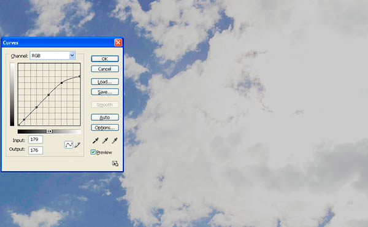
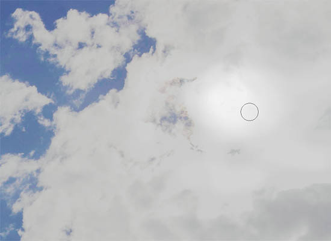
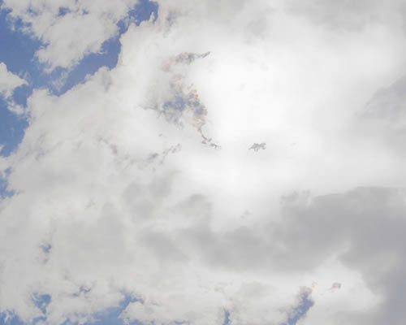
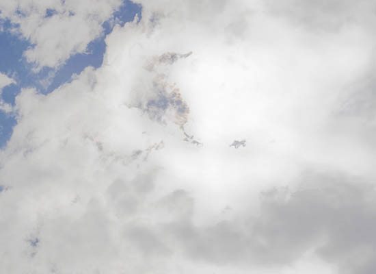
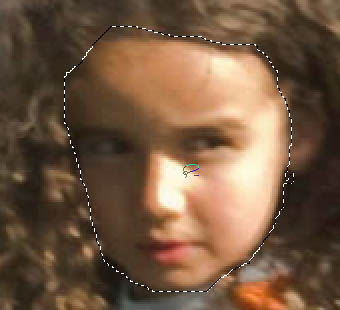
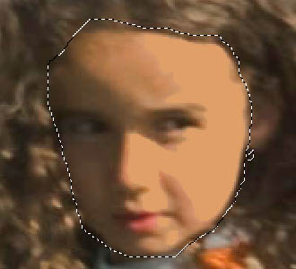
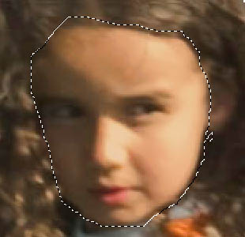
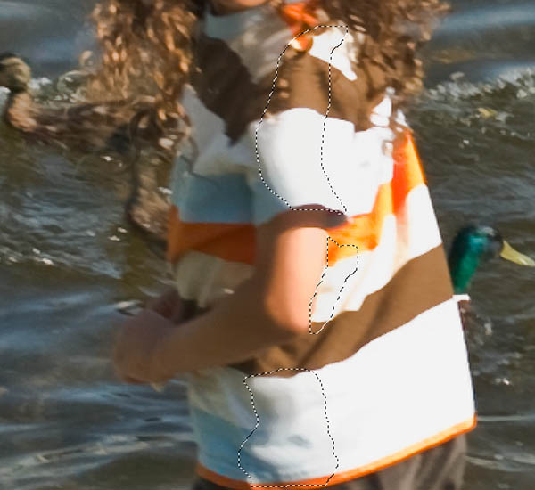

|
Eradicating Blown Highlights in PhotoshopVersion 1.0, © 2008 by Dale Cotton, all rights reserved Fig. 1: Blown highlights (click to download full size version) Sometimes the dynamic range of a scene exceeds that of our camera, no matter how carefully we expose. In Fig. 1 the ugly white patch of clouds on the right results from the sun being directly behind it, and could well be considered as specular glare. Specular or no, if this were part of an image that was otherwise a keeper, it would have to go. I'm sure too many otherwise great shots languish on photographer's hard drives simply because the photographer doesn't know the techniques needed to save them. Example 1 &ndash blown clouds &ndash technique 1To follow along: right-click on Fig. 1, download the full scale image, then open it in Photoshop (most any version will do):  Fig. 2: Curve to clip blown highlights 1. Open the curves dialogue, click on the darkest part of the clouds, then click where that point falls on the curve to create a lock-down point. 2. Create a few more lock-downs below that one to keep the bottom of the curve from skewing. 3. Drag the top right end of the "curve" line down. This clips the highlights. I've clipped fairly extremely; you can go anywhere north of that you like. In cases in which the blown area is fairly small this may be all you'll need to do. No such luck here. [An alternate approach to these first three steps is to use the combination of eye dropper and paint bucket tools, as demonstrated in Example 2.] 4. Close the Curves dialogue then create a history brush point on whatever history state came just before the curve.  Fig. 3: Early stages of history brush work  Fig. 4: More history brush work 5. Using the history brush set to some low opacity like 10% and fairly large width like 45, undo the clipping in the areas furthest away from the original dark areas of the cloud. Start where the sun must be (see Fig. 3) and work a circular area at that point back to full blown brightness while expanding your history brush region with each pass. If you make a move you don't like, simply use the Ctrl+Z normal undo to get rid of it. I often work at high magnifications like 200% and 300%.  Fig. 5: Using the rubber stamp AKA clone tool 6. At any point switch to the clone tool, set the opacity to low and brush width fairly large, choose a source point in the dark regions of the clouds, then click along the edge between the dark area and the light area. Move along that border to lessen the transition. You've spent a life time observing clouds (whether on purpose or not); so trust your eye to tell you if anything you do is not believable – simply undo that stroke and try again.
Fig. 6: Final result 7. Switch back and forth between history brush and clone stamp as desired until you have a believable shading throughout the previously blown region. Example 1 &ndash blown clouds &ndash technique 2Another approach to the same problem is to use only the rubber stamp tool:
Fig. 7: Select Color Range 1. Open the original image, open the Select->Color Range... dialogue, set the fuzziness to approx. 25, click on any blown highlight area, then click OK to close the dialogue. You now have a selection of the the blown areas.
Fig. 8: Cloning in transitions 2. Switch to the rubber stamp tool, set the brush size fairly broad – maybe 65 – with soft edges and opacity around 20. Sample from the dark areas outside the selection and clone into the selection to create transitions from dark to white. Use even lower opacity and/or a smaller brush to blend. This method can be much quicker than the first but requires that there be something appropriate as a source for rubber stamping, which is not always the case. Example 2 &ndash skin and clothingFig. 9: Blown highlights in skin and clothing (click for full scale version) Fig. 9 – a small crop from a larger image – is another example of blown highlights. We not only have to deal with the white areas but the posterization that's especially obvious in the left arm and right leg.  Fig. 10: Select face area 1. Lasso the girl's face; no great care for accuracy needed. 2. Press the letter I to bring up the eyedropper, then grab her skin colour from some area of medium tone.  Fig. 11: After paint bucket 3. Press G to switch to the paint bucket tool (press Shift+G if the Gradient tool comes up instead). Set the Tolerance to 100. Click on a blown spot in her cheek or nose. 4. Press Ctrl+Shift+F (I believe that's Option+Shift+F on the Mac) to bring up the Fade dialogue, then fade to about 50%. Look for the percent at which there is minimal demarcation between the new colour area and the original while still eliminating the blown highlights.  Fig. 12: After cloning 5. Use the rubber stamp tool at low opacity to remove any demarcation between old and new colour and to blend between highlight and shadows. If you want even less glare on the skin, simply repeat from step 2. I suggest you also do the right leg and left elbow for further practice. Use the rubber stamp liberally to smooth out the posterized transition between shadow and mid-tone. The girl's shirt can be handled with exactly the same techniques. Select the entire shirt. Choose a neutral light grey colour from within the shirt area, then use the paint bucket at 100% to fill in the blown highlights, then fade almost to about 10%.  Fig. 13: Selecting part of shirt to create a transition To improve the shadow/highlight transition, select a swath covering that area, then fill using the paint bucket with a middle grey eyedropped from the shirt, then fade to some intermediate value. Use the rubber stamp to blend in. Fig. 14: Final edit Click on Fig. 14 to see my own results from following the above steps.
|
{kind=link}
{kind=link}
{kind=link}